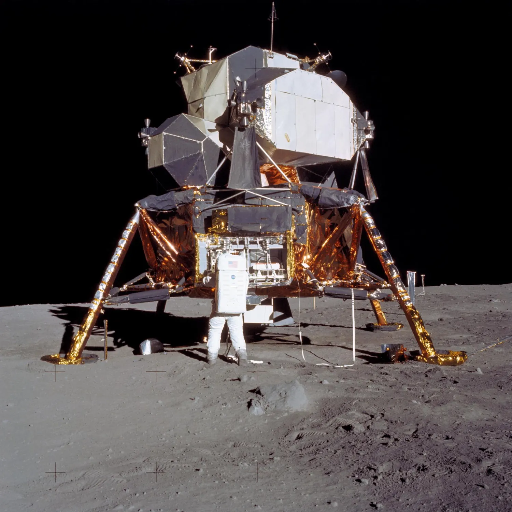
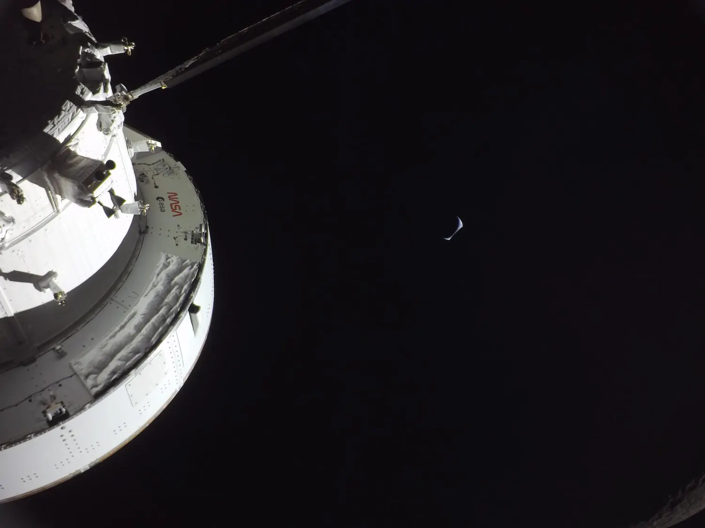
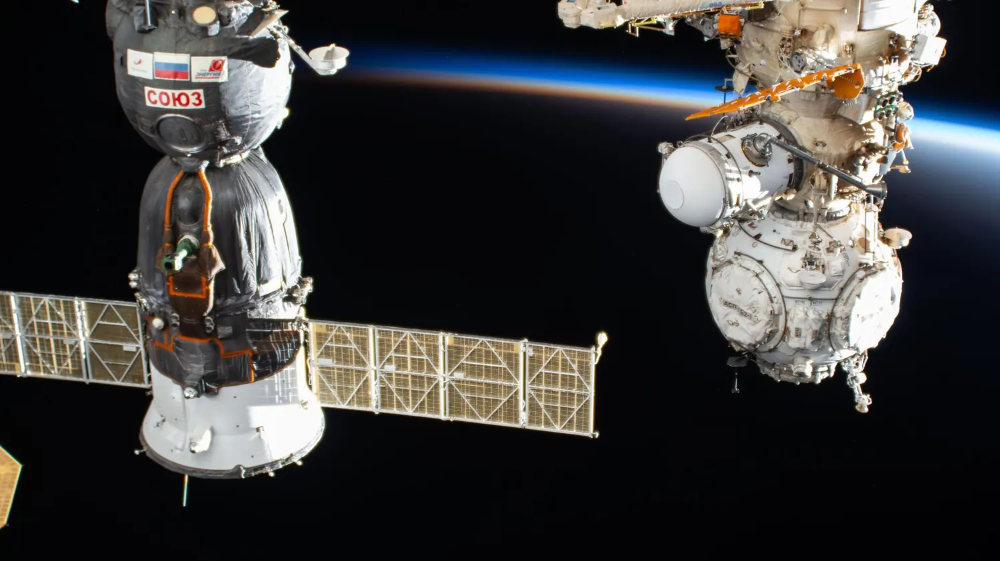
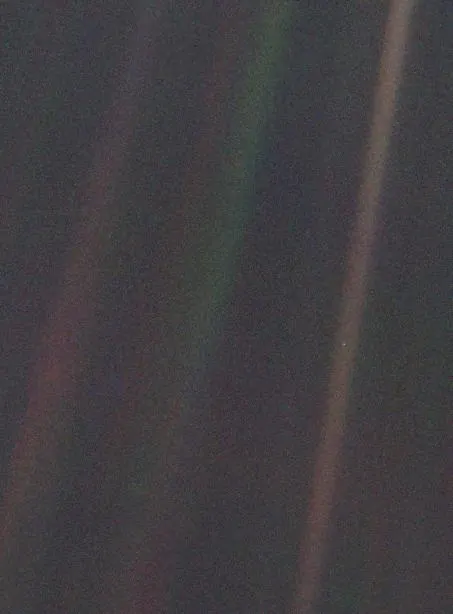
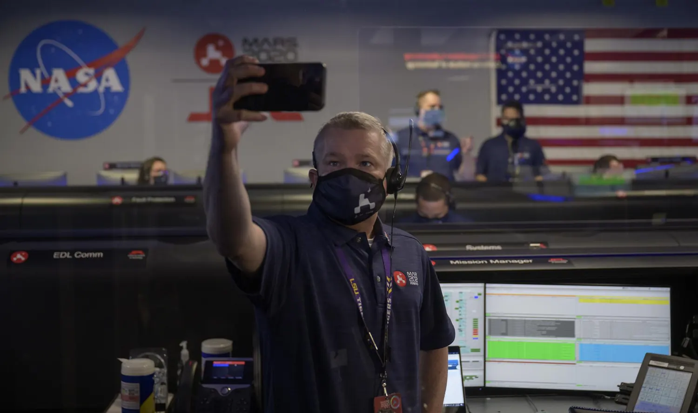

The numbers, before the stories
Opening the door: 1957 to 1969
Sputnik 1
An 83.6 kg aluminium sphere with four antennas and a radio beacon. It did almost nothing except beep — and in doing so proved that orbit was reachable.
Yuri Gagarin, one orbit
108 minutes, a single circuit of the Earth aboard Vostok 1. Gagarin did not land in his capsule: he ejected at about 7 km altitude and parachuted down separately, as the design intended.
The first spacewalk
Alexei Leonov left Voskhod 2 for 12 minutes and 9 seconds. His suit inflated in the vacuum until he could not fit back through the airlock, and he had to bleed off pressure to get inside.
Apollo 11
Neil Armstrong, then Buzz Aldrin, on the Sea of Tranquillity. Eight years after Gagarin's single orbit.

Apollo, and then nothing
Six missions landed — Apollo 11, 12, 14, 15, 16 and 17. Apollo 8 and 10 flew to the Moon and came back without landing; Apollo 13 got there and survived not landing. Twelve people walked on the surface, all of them American, all of them men.
The last was Apollo 17, in December 1972. Eugene Cernan was the last human to stand on another world, and Harrison Schmitt — the only professional geologist to go — was there with him. Nobody has been back since. In total, 24 people have travelled beyond low Earth orbit, all of them between 1968 and 1972.

Learning to stay: the space stations
The story after Apollo is not about distance, it is about duration. The Soviet Salyut programme began in 1971 and worked out how to resupply and swap crews. Mir then held people continuously from September 1989 to August 1999 — 3,644 days. Valeri Polyakov's single stay of 437 days aboard Mir is still the record for one uninterrupted spaceflight.
Assembly of the International Space Station began with the Zarya module in November 1998. Expedition 1 arrived on 2 November 2000, and there has been someone aboard every single day since — a run that passed Mir's record in 2010 and now stands at more than a quarter of a century.

The Shuttle: thirty years, and two losses
Between 1981 and 2011 the Space Shuttle flew 135 missions — Discovery 39, Atlantis 33, Columbia 28, Endeavour 25, Challenger 10. It built the ISS and launched and repaired Hubble.
It also killed fourteen people. Challenger broke apart shortly after launch on 28 January 1986, when a booster O-ring failed in unusually cold conditions. Columbia disintegrated during re-entry on 1 February 2003. Seven crew were lost each time. Both accidents were traced to known risks that had been normalised over years of flights.
The robots got everywhere first
Every planet in the Solar System has been visited, and all of it was done by machines.
| World | First flyby | First orbiter |
|---|---|---|
| Mercury | Mariner 10, 1974 | MESSENGER, 2011 |
| Venus | Mariner 2, 1962 | Pioneer Venus, 1978 (first US) |
| Mars | Mariner 4, July 1965 | Mariner 9, 1971 |
| Jupiter | Pioneer 10, Dec 1973 | Galileo, Dec 1995 |
| Saturn | Pioneer 11, Sept 1979 | Cassini, July 2004 |
| Uranus | Voyager 2, Jan 1986 | None — ever |
| Neptune | Voyager 2, Aug 1989 | None — ever |
Uranus and Neptune have each been visited exactly once, by the same spacecraft, in a single flyby. Almost everything we know about the ice giants comes from those two encounters.
The Voyagers left entirely
Launched sixteen days apart in 1977 — Voyager 2 on 20 August, Voyager 1 on 5 September. Voyager 2 remains the only spacecraft to have visited all four giant planets. Both have now crossed the heliopause into interstellar space: Voyager 1 in August 2012, Voyager 2 in November 2018.
They run on plutonium-238, which produced about 470 watts at launch and has decayed to roughly 220 watts. Instruments are being switched off one by one to stretch what is left. Each carries a gold-plated copper record holding 116 images, ninety minutes of music, and greetings in 55 languages — addressed to nobody in particular.

Driving on Mars
Five NASA rovers have operated successfully on the Martian surface. Sojourner came first, riding down with Mars Pathfinder in 1997 and proving that the idea worked at all as it crept a few dozen metres around its lander. Spirit landed in January 2004 and worked until 2010 — 2,210 Martian days against a 90-day design life. Opportunity landed three weeks later and lasted until a planet-wide dust storm silenced it in June 2018, fifteen years into a three-month mission.
Curiosity has been in Gale crater since August 2012 and is still working. Perseverance landed in Jezero crater in February 2021 and is caching samples for a future return mission. It carried Ingenuity, the first aircraft to fly on another world, which managed 72 flights before a damaged rotor ended its campaign in January 2024.

Bringing pieces home
Sample return is the hardest thing robotic exploration does. Japan's Hayabusa brought back grains from asteroid Itokawa in 2010, and Hayabusa2 returned material from Ryugu in December 2020. NASA's OSIRIS-REx delivered a capsule of asteroid Bennu to the Utah desert in September 2023. China's Chang'e missions have returned lunar samples, including the first ever taken from the Moon's far side.
What happens next
NASA's Artemis programme intends to put people back on the Moon, this time to stay, with commercial landers and a small lunar station in support. Schedules have slipped repeatedly and continue to move, so any specific date here would be out of date before you read it. The honest summary is that the hardware is being flown and tested now, and the return has not happened yet.
Worth sitting with
Roughly 600 people have been to space. Twenty-four have gone further than low Earth orbit, and the last of them came home in 1972 — before most people alive today were born.